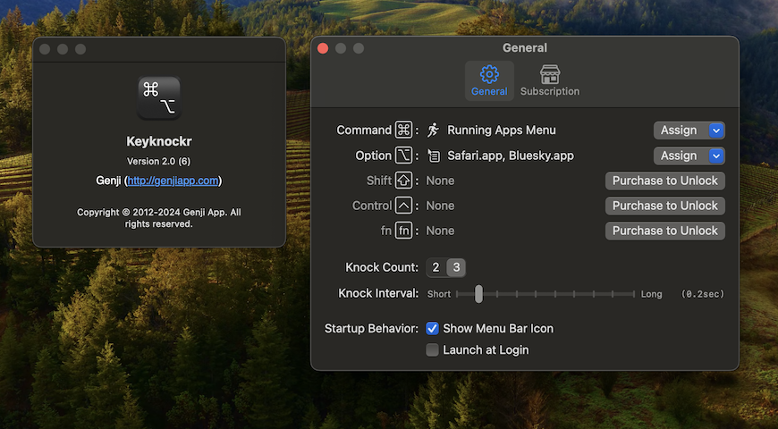

Keyknockr is a launcher application for macOS.
By knocking (double/triple tap) the modifier keys (Command / Option / Shift / Control / Fn), you can launch/activate assigned application. Additionally, you can perform actions such as opening URLs in the default web browser, switching to the last active application, or so on.
Subscribing to the auto renewable subscription will unlock the assignment action to Shift/Control/Fn keys, and assignment 3 or more items to the "Cycle Activation" and "Popup Menu" action.

System Requirements
macOS 14.2+
Usage
Launch Keyknockr
Click Keyknockr's icon in menu bar
Choose "Settings..." from menu
In the "General" tab, click "Assign" button next to the modifier key you want to assign the action to
Choose an action:
App/Local File
An app is launched or activated. If you assign a local file, the file is opened by its default app
URL
The URL is opened in the default web browser
Switch to Last Active Application
A last activated app is launched or activated
Running Applications
A Menu that is listed current running apps is popped up
Cycle Activation
The assigned apps are launched or activated in specified order
Popup Menu
A Menu that is listed assigned apps, local files and URLs is popped up
Activate an action to knock (double/triple press) the modifier key
Version history
ver. 2.0, 2024-03-02
Rebuilt from scratch, and rebranded from "CLCL" to "Keyknockr"
Added new action: "Running Applications", "Popup Menu"
Added "Launch at Login"
Switched to freemium model with In-App Purchase auto renewable subscription
ver. 1.2, 2013-01-03
Added a preference to hide a menu bar icon
ver. 1.1.1, 2012-02-24
Fixed an issue that app crashes
ver. 1.1, 2012-02-04
Added new special action "Cycle Activation"
Enabled App Sandbox
ver. 1.0.1, 2012-01-20
Fixed an issue that app crashes on launch in Mac OS X 10.6
ver. 1.0, 2012-01-18
First version